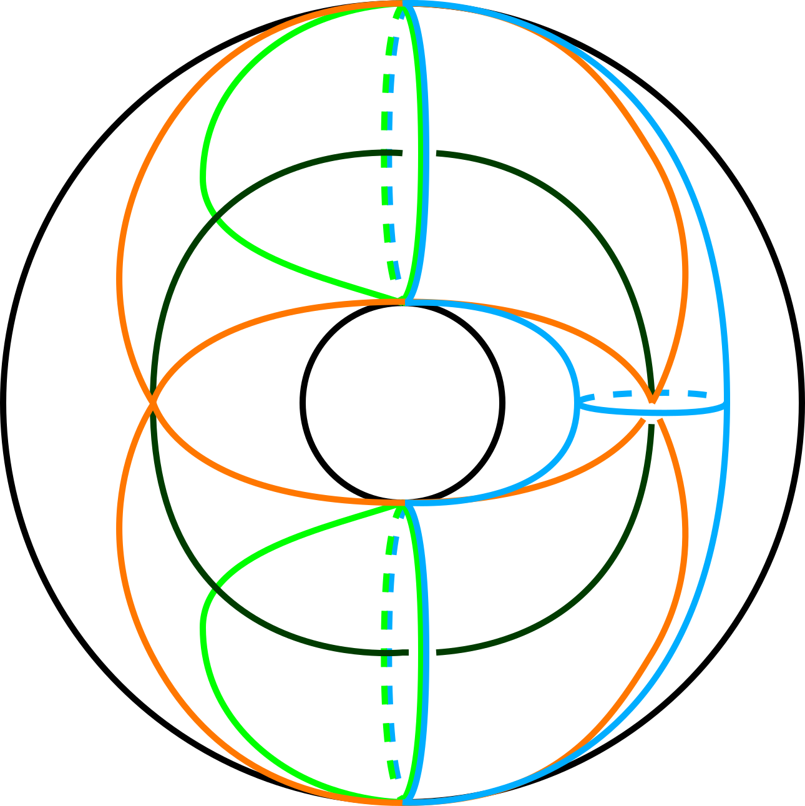

The SL(2,R) "banana" helps us to compute Conley-Zehnder indices in three dimensions.
My research investigates two intertwined themes. What can we learn about two-dimensional dynamics and four-dimensional symplectic embeddings via three-dimensional contact geometry (specifically, from the invariants of embedded contact homology)? And how can we leverage low-dimensional topology to compute these contact invariants? Key tools I use are open book decompositions, torus and circle actions on three- and four-manifolds, and symplectic fillings/cobordisms.
Code: Much of my research relies heavily on computer programs. Soon I will set up a GitHub page, but for now, if you are interested in Mathematica code related to lattice path combinatorics, please contact me.
In Preparation
- Quantitative cobordism for transverse knots, with Agniva Roy and Yuan Yao. We use the knot filtration on ECH to obstruct small symplectic cobordisms between knots in the standard three-sphere. Conversely, we construct such cobordisms to prove that our bounds are tight.
Preprints
- Torus knotted Reeb dynamics and the Calabi invariant, with Jo Nelson. We compute the ECH knot filtration for general torus knots in the standard three-sphere and apply our computation to prove a quantitative existence result for periodic orbits of symplectomorphisms of surfaces with one boundary component in certain periodic isotopy classes.
- A classification of infinite staircases for Hirzebruch surfaces (2023), with Nicki Magill and Ana Rita Pires. We complete the proof of a 2020 conjecture of Cristofaro-Gardiner--Holm--Mandini--Pires. Along the way, we complete the classification of Hirzebruch surfaces into those which do and do not have ellipsoid embedding functions infinite staircases which was conjectured in Staircase patterns in Hirzebruch surfaces.
Published or Accepted
- Torus knot filtered embedded contact homology of the tight contact 3-sphere, to appear in the Journal of Topology, with Jo Nelson. We compute the ECH chain complexes of contact forms adapted to the open book decompositions with the positive T(2,q) torus knots as the binding, extending our work on prequantization bundles by veiwing their Reeb flows as Seifert fibrations. In particular, define the ECH knot filtration for certain degenerate elliptic orbits and compute it.
- Four-periodic infinite staircases for four-dimensional polydisks (2022), to appear in Involve, with Caden Farley, Tara Holm, Nicki Magill, Jemma Schroder, Zichen Wang, and Elizaveta Zabelina. We identify a new infinite staircase suggested by the fractal structure explained in Staircase patterns in Hirzebruch surfaces. Our proof provides an method to prove a 2019 conjecture of Usher. This work was undergraduate research produced during a summer 2022 SPUR program at Cornell University.
- Staircase patterns in Hirzebruch surfaces (2022), to appear in Commentarii Mathematici Helvetici, with Nicki Magill and Dusa McDuff. We conjecturally classify all Hirzebruch surfaces with infinite staircases. Specifically, we describe the Cantor set structure of known infinite staircases for Hirzebruch surfaces, and prove a weak version of a 2020 conjecture of Cristofaro-Gardiner--Holm--Mandini--Pires.
- Infinite staircases for Hirzebruch surfaces (2021), with Maria Bertozzi, Tara Holm, Emily Maw, Dusa McDuff, Grace Mwakyoma, and Ana Rita Pires. We identify several infinite families of infinite staircases of symplectic embeddings of four-dimensional ellipsoids into one-point blowups of the complex projective plane.
- Symplectic embeddings of four-dimensional polydisks into half integer ellipsoids (2020), with Leo Digiosia, Jo Nelson, Haoming Ning, and Yirong Yang. We obstruct embeddings of polydisks into certain rational ellipsoids, extending the techniques of Beyond ECH capacities. This work was undergraduate research produced during a summer 2022 SIREN program run by Jo Nelson at Rice University for which I served as a mentor.
- Embedded contact homology of prequantization bundles (2020), to appear in the Journal of Symplectic Geometry, with Jo Nelson. In his 2011 thesis, David Farris computed the ECH of prequantization bundles over Riemann surfaces, relating it as a Z_2-graded theory to the exterior algebra of the homology of the base. We extend the grading on his isomorphism to Z, and complete several techical proofs using Seiberg-Witten Floer cohomology and the asymptotics of pseudoholomorphic curves.
- Mean action of periodic orbits of area-preserving annulus diffeomorphisms (2021), corrigendum. I use knot-filtered embedded contact homology to understand the mean action spectrum of annulus symplectomorphisms. In particular I prove a quantitative criterion for such symplectomorphisms to have no periodic orbits. The corrigendum corrects two errors (one pointed out by Abror Pirnapasov) with no change to the final results.
- Pattern avoidance in poset permutations (2015), with Sam Hopkins. We extend the concept of permutation pattern avoidance to partially ordered sets.